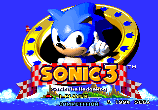
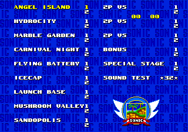

Sonic CD
Curiosidades sobre fases, protótipos e alguns "Easter Eggs".
RetroWiki é um website inspirado nos antigos fórums e fandoms de games da internet, onde é abordado vários assuntos sobre games, principalmente aqueles mais clássicos, como os games dos anos 90, nosso foco é mostrar conteúdos diversos, como curiosidades, protótipos, conteúdos descartados, Easter Eggs e dentre vários outros. No momento, vamos abordar esses conteúdos sobre uma das franquias mais queridas do mundo dos games, Sonic the Hedgehog, que, apesar dos pesares, essa é uma franquia que permanece viva até hoje, com muitos lançamentos nos últimos anos. Entretanto, a RetroWiki irá explorar os jogos mais clássicos, como Sonic 1, Sonic 2, Sonic CD e Sonic 3, estes que são com certeza os mais ricos e memoráveis da série.
Ainda nessa página, comentaremos sobre um protótipo recém descoberto de um dos jogos mais populares dentre os fãs da série, Sonic The Hedgehog 3.
 Sonic The Hedgehog 3 foi o quarto (apesar de ser nomeado como terceiro) e último da franquia da série clássica, foi lançado para o Mega Drive (Genesis), encerrando o arco da Death Egg, que começou no jogo anterior, Sonic The Hedgehog 2. O conhecido personagem Knuckles foi apresentado nesse game, que expandiu muito a história do universo dos jogos. Dentre todo os jogos 2D, Sonic 3 foi considerado um dos melhores jogos da franquia. O jogo foi lançado no Japão para o Mega Drive em 27 de maio de 1994. Já o lançamento europeu e americano foi em 24 de fevereiro de 1994 e 2 de fevereiro de 1994 para o Genesis, respectivamente.
Iremos abordar as diferenças mais notáveis para o jogo final, alguns bugs e outras coisas que esse protótipo possui.
O protótipo mais conhecido e também mais recente do game, foi encontrado em 16 de Novembro de 2019 pela Hidden Palace. A razão de ser o mais conhecido se deve ao fato de ser o único prototípo "real" do jogo, já que todos os outros protótipos de pré-lançamento eram do jogo final. Embora o nome dado ao protótipo seja a data de 3 de Novembro de 1993, os dados coletados a partir do código fonte indicam que pode ter sido compilado no final de outubro do mesmo ano.
A tela de título tem uma das maiores diferenças pra versão final, sendo bem simples e mal acabada, não há nenhum fundo, além das cores serem bastantes distoantes entre si. Uma diferença bem visível é que o corpo do Sonic aparece inteiro.
Uma das coisas mais interessantes desse protótipo, Sonic tinha uma mecânica EXTREMAMENTE parecida com o que mais tarde apareceria em um dos jogos mais recentes da franquia, Sonic Mania, a mecânica em questão é o Drop Dash. ele pode ser executado segurando o direcional para cima, e, em seguida, apertando o botão de pulo.
O logotipo parece ter sido retirado de Sonic 2, só que um pouco bugada!
 Quase o mesmo que o jogo final, entretanto, não reproduz nenhuma música, tornando o tema padrão do File Select não utilizado. Uma outra diferença é quando se seleciona o Sound Test e pressiona B, irá reproduzir o som erro.
Como no jogo final, nenhuma das fases de Sonic & Knuckles são acessáveis por padrão (com exceção de Flying Battery). Ao contrário do jogo final, todos os estágios de bônus são acessíveis (o último 2P VS Act vai para o bônus da máquina de chicletes, enquanto os dois atos "Bônus" vão para os estágios de bônus Sonic & Knuckles).
Sonic e Tails tem alguns probleminhas com gráficos quando se termina uma fase, como pode ver abaixo:
Quanto aos bugs visuais, esse protótipo tem aos montes, devido a provavelmente ainda estar no início do desenvolvimento. Iremos alguns dos exemplos, e você irá ver que alguns deles são bem esquisitos.
O title card é carregado quando a fase começa, independentemente se a cutscene da abertura é reproduzido, fazendo com que as os gráficos quebrem totalmente.
Além de ter um fundo bem diferente (e bugado), o jogo tinha problemas para carregar o fundo em altitudes mais elevadas do cenário após o jogador morrer na Hidrocity Zone, isso causava esse estranho bug visual, com vários números e gráficos quebrados.
Essa é uma "fase" completamente quebrada e injogável, tanto que nem pode ser jogada sem alterar o código fonte, e, com isso, assim que o Sonic spawna, o jogador morre sem motivo. Ela reutiliza os title cards da Launch Base Zone. Isso acontece para o resto das fases até The Doomsday Zone, com algumas mudanças notáveis aqui e ali.
1. Hidden Palace, Sonic the Hedgehog 3 (Nov 3, 1993 prototype)